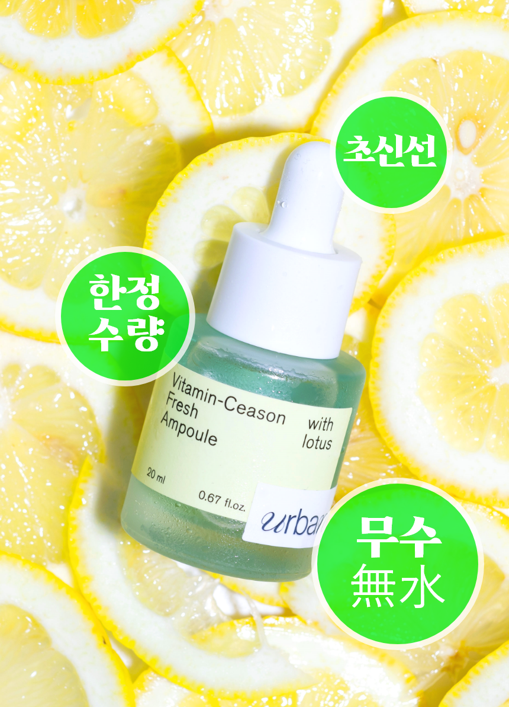
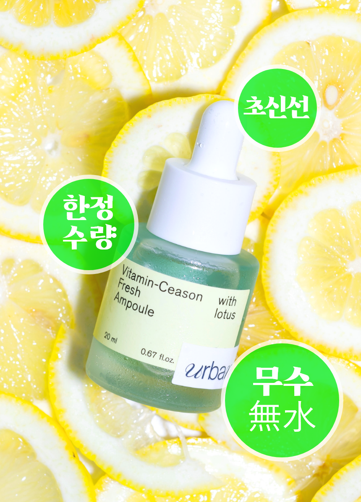
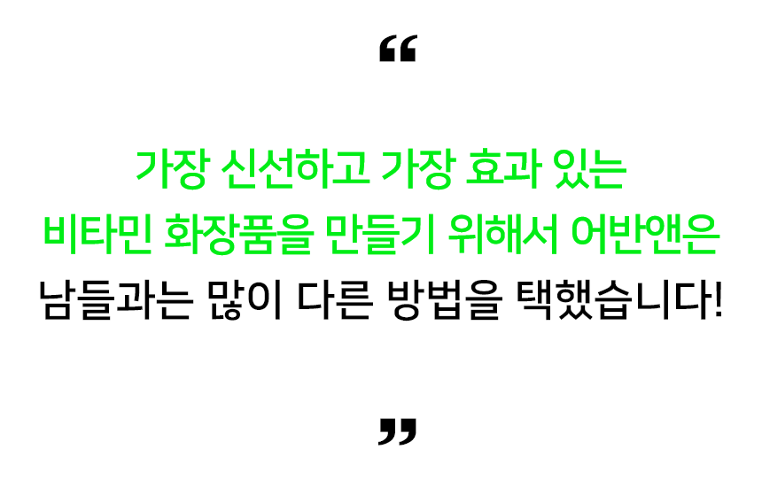
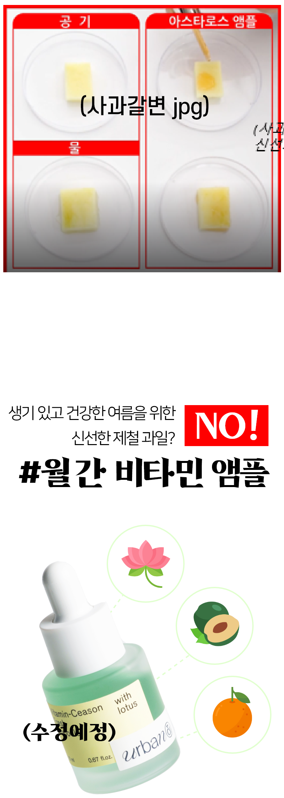
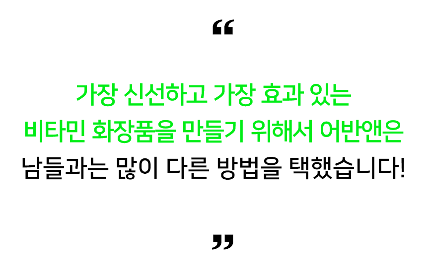
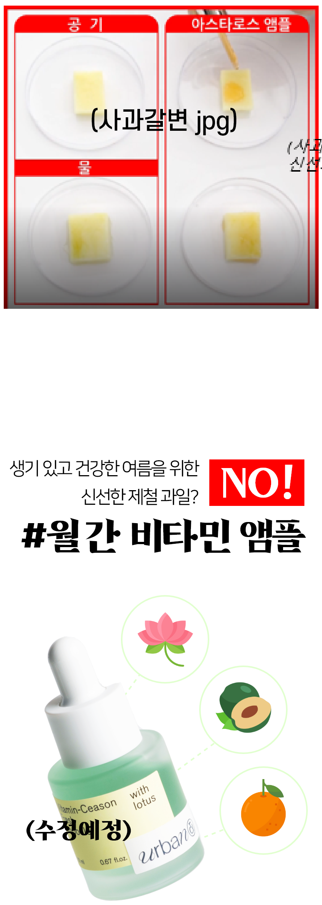

"
여름만 되면 심해지는
톤.잡.기 고민을 끝내기 위해
효과만 생각하고 만들었습니다.
"


비타민C가 함유된 화장품은 유통기한이 1년입니다.
보통의 화장품들은 대부분 유통기한이 2~3년인데
비타민C는 신선도가 저하되면 효과가 없는 것과 다름 없기에
유통기한이 다른 화장품들에 비해 훨씬 짧습니다
어반앤 비타민-씨즌 프레쉬 앰플은
계절별 피부 고민에 맞춰
매 달 좋은 성분을 다르게 함유합니다.
그리고 최강의 효과를 위해 펀딩이 종료된 즉시
신선하게 한정 수량만 만듭니다.
미리 만들어주는 화장품이 아닙니다.
비타민C 제품은 꼭 신선하게 사용하셔야 돼요!

연꽃잎과 매실의 조합!
그린 솔루션으로 여름 피부 케어 공략!
 



제조된 순간부터 산화가 빠르게 진행되는 비타민C는
물과 만나는 순간 더욱 빠르게 산화가 진행되며 신선도 및 효과가 저하됩니다.
게다가 다른 성분에 비해 비싼 원료 가격으로 인해 이익을 챙기기 위해서
산화를 막지 못하는 저렴한 플라스틱 용기를 선택하기도 합니다.

비타민C가 함유된 화장품에 아무리 좋은 성분을 가득 넣어도
물이 섞인다면 효능이 파괴되고 산화가 빠르게 진행되어
시간이 지나면 일정한 농도 유지가 어려워서
비타민C의 제 기능과 효과를 발휘하기가 어려워집니다.


물은 피부에 닿았을 때 빠르게 증발하여
과량의 비타민C만 피부 겉 표면에 남게 됩니다.
피부 겉 표면에 남은 비타민C는 자극을 줄 수 있기에
피부에 스며들기 이전에 비타민 앰플은 증발하면 안됩니다
어반앤 비타민-씨즌 앰플은 워터리스 시스템을 통해
피부에 효과적으로 스며들 수 있도록 만들었습니다